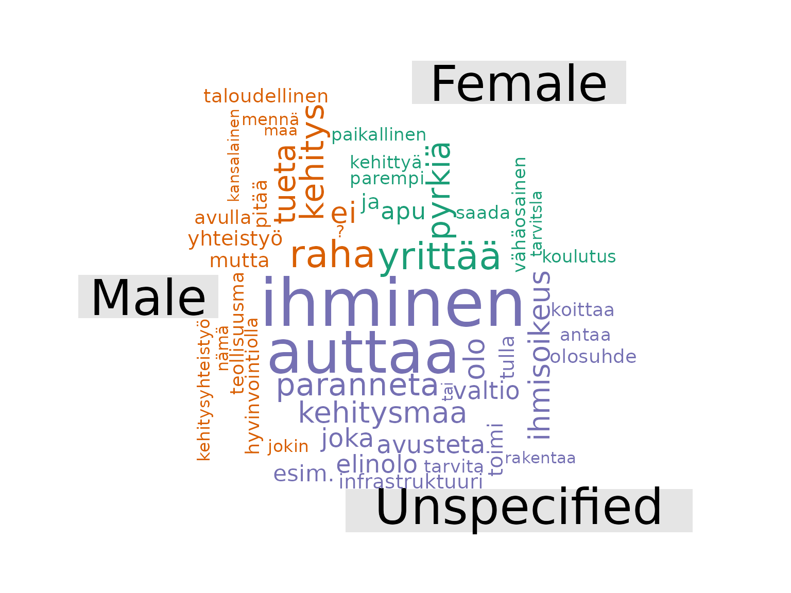
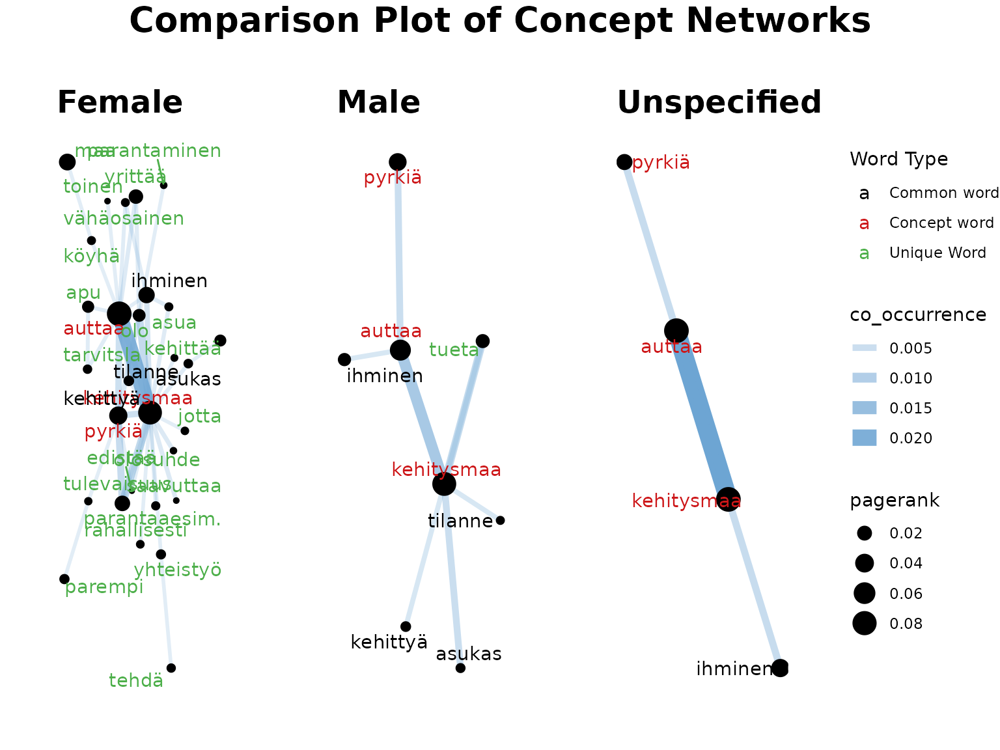
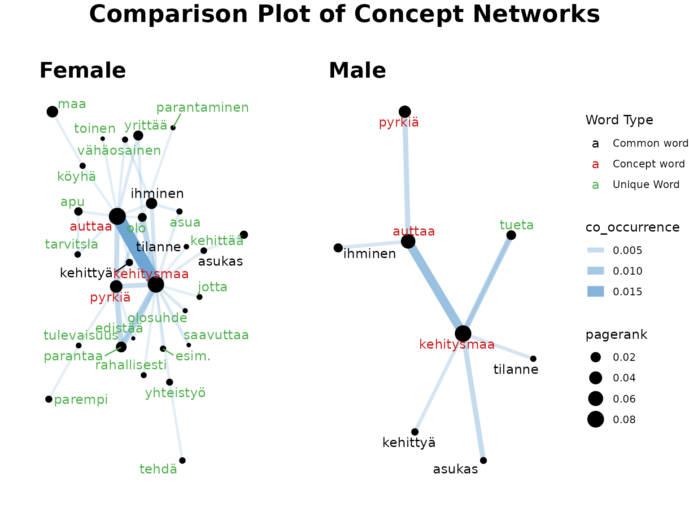
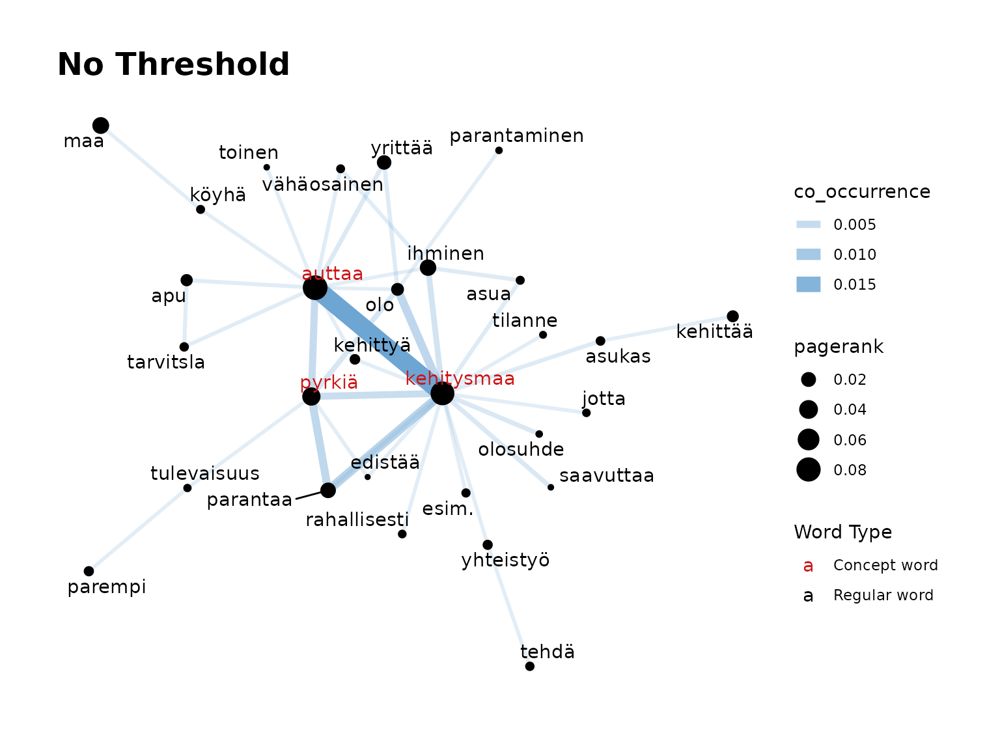
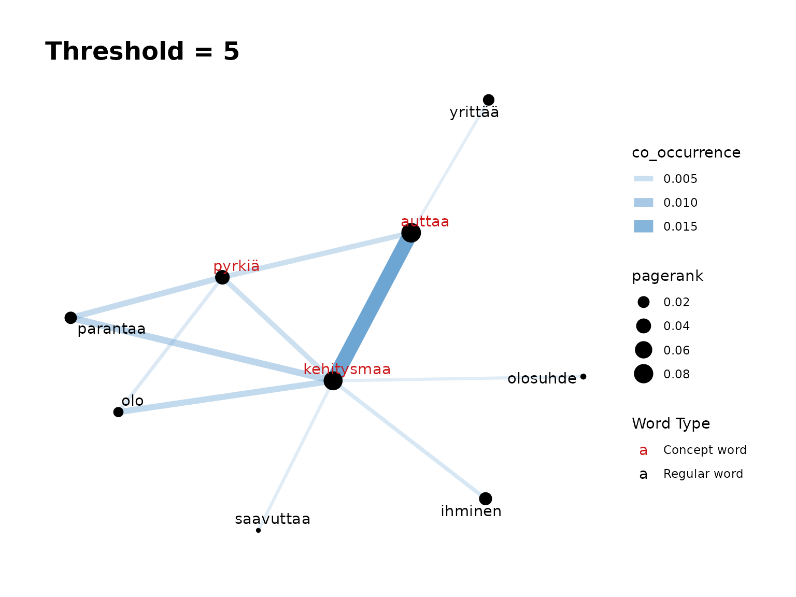

Tutorial5-Demonstration_of_comparison_functions
Tutorial5-Demonstration_of_comparison_functions.RmdIntroduction
When analysing responses to open-ended questions, you may want to
look into whether different groups of survey participants have, in
general, responded differently to the prompt.
finnsurveytext contains a number of comparison functions
which are intended to be used to compare responses between groups. These
comparison functions covered are defined in
r/04_comparison_functions.R and
r/05_comparison_concept_network.R.
One way to split the data is using a different question within the
survey such as a categorical question (eg. gender, location, or level of
education) or an ordinal variable (such as age or income bracket). In
this tutorial, we will look at comparing responses to a question based
on gender. Before using the comparison functions, we run the preparation
functions which are in r/01_prepare_conll-u.R (and which
are covered in detail in ‘Tutorial1-Prepare CoNLL-U’) for each group
separately.
The comparison functions are:
fst_summarise_compare()fst_pos_compare()fst_length_compare()fst_comparisoncloud()fst_get_unique_ngrams()fst_join_unique()fst_ngrams_compare_plot()fst_ngrams_compare_plot2()fst_plot_multiple()fst_freq_compare()fst_ngrams_compare()fst_cn_get_unique()fst_cn_compare_plot()fst_concept_network_compare()
We will look at the following question:
- q11_2] Jatka lausetta: Kehitysyhteistyö on toimintaa, jossa…
(Avokysymys)
- (In English) q11_2] Continue the sentence: Development cooperation is an activity in which… (Open question)
Installation of package.
Once the package is installed, you can load the
finnsurveytext package as below: (Other required packages
such as dplyr and stringr will also be
installed if they are not currently installed in your environment.)
The Data
There are four sets of data files available within the package which are used in this tutorial
Development Cooperation Data Split by Gender
- data/dev_data.rda - All responses to the survey
- data/dev_data_m.rda - Responses to the survey by participants who have listed their gender as male
- data/dev_data_f.rda - Responses to the survey by participants who have listed their gender as female
- data/dev_data_na.rda - Responses to the survey by participants who have not responded to the gender question
We can prepare the data into CoNLL-U format using functions from
01_prepare_conllu-u.R as follows: (We are preparing
versions with and without stopwords removed because we have some
functions which are more informative with or without the stopwords
included.)
all <- fst_prepare_conllu(
data = dev_data,
field = "q11_2",
stopword_list = "none"
)
all_nltk <- fst_prepare_conllu(
data = dev_data,
field = "q11_2",
stopword_list = "nltk"
)
female <- fst_prepare_conllu(
data = dev_data_f,
field = "q11_2",
stopword_list = "none"
)
female_nltk <- fst_prepare_conllu(
data = dev_data_f,
field = "q11_2",
stopword_list = "nltk"
)
male <- fst_prepare_conllu(
data = dev_data_m,
field = "q11_2",
stopword_list = "none"
)
male_nltk <- fst_prepare_conllu(
data = dev_data_m,
field = "q11_2",
stopword_list = "nltk"
)
na <- fst_prepare_conllu(
data = dev_data_na,
field = "q11_2",
stopword_list = "none"
)
na_nltk <- fst_prepare_conllu(
data = dev_data_na,
field = "q11_2",
stopword_list = "nltk"
)The data is formatted like this:
| doc_id | paragraph_id | sentence_id | sentence | token_id | token | lemma | upos | xpos | feats | head_token_id | dep_rel | deps | misc |
|---|---|---|---|---|---|---|---|---|---|---|---|---|---|
| doc1 | 1 | 1 | parannetaan kehitysmaiden oloja. | 1 | parannetaan | paranneta | VERB | V,Pass,Ind,Pres | Mood=Ind|Tense=Pres|VerbForm=Fin|Voice=Pass | 0 | root | NA | NA |
| doc1 | 1 | 1 | parannetaan kehitysmaiden oloja. | 2 | kehitysmaiden | kehitysmaa | NOUN | N,Pl,Gen | Case=Gen|Number=Plur | 3 | nmod | NA | NA |
| doc1 | 1 | 1 | parannetaan kehitysmaiden oloja. | 3 | oloja | olo | NOUN | N,Pl,Par | Case=Par|Number=Plur | 1 | obj | NA | SpaceAfter=No |
| doc2 | 1 | 1 | NA | 1 | na | na | NOUN | N,Sg,Par | Case=Par|Number=Sing | 0 | root | NA | SpacesAfter= |
| doc3 | 1 | 1 | autetaan parantamaan kehitysmaiden oloja | 1 | autetaan | auttaa | VERB | V,Pass,Ind,Pres | Mood=Ind|Tense=Pres|VerbForm=Fin|Voice=Pass | 0 | root | NA | NA |
| doc3 | 1 | 1 | autetaan parantamaan kehitysmaiden oloja | 2 | parantamaan | parantaa | VERB | V,Act,InfMa,Ill | Case=Ill|InfForm=3|VerbForm=Inf|Voice=Act | 1 | xcomp | NA | NA |
Now that our data is ready, we can look at our data and compare the results.
Comparison of responses based on gender
All of our comparison functions can compare between two and four sets of data. The following common arguments appear in multiple functions and are defined the same way in each:
-
data1,data2,data3anddata4are the processed data in ConLL-U format (such as the output offst_prepare_connlu) for the groups for comparison. Since you can compare between 2 and 4 groups,data3anddata4are both optional. -
name1,name2,name3andname4are optional descriptive names for the different groups. They will default to"Group 1","Group 2","Group 3", and"Group 4".
First, we will look at some summary functions to compare the responses overall. (We are using the versions which include the stopwords here.) The functions are:
fst_summarise_compare()fst_pos_summary()fst_length_compare()
Make Comparison Summary
We can run this function to create a summary table for our data: (we
use knitr::kable function below to display results in a
“prettier” table)
knitr::kable(
fst_summarise_compare(
data1 = all, name1 = "All",
data2 = female, name2 = "Female",
data3 = male, name3 = "Male",
data4 = na, name4 = "Unspecified"
)
)| Description | Respondents | No Response | Proportion | Total Words | Unique Words | Unique Lemmas |
|---|---|---|---|---|---|---|
| All | 945 | 34 | 0.97 | 5495 | 1357 | 932 |
| Female | 673 | 18 | 0.97 | 4102 | 1062 | 738 |
| Male | 183 | 8 | 0.96 | 965 | 440 | 339 |
| Unspecified | 89 | 8 | 0.92 | 428 | 214 | 178 |
To run fst_summarise_compare(), we provide the following
arguments to the function:
-
data1,data2,data3anddata4(as defined above,data3anddata4are optional) -
name1,name2,name3andname4(optional, as defined above)
Remarks:
We can already see that our data is quite unbalanced. There are a lot more female respondents than male or unspecified. The response (to this question) rate is high (97%) but slightly lower for the unspecified respondents. Unsurprisingly, since there are more female responses, the female responses to this question contain a larger variety of words.
POS and Length Comparisons
Next, we will look at part-of-speech tags and lengths of responses.
knitr::kable(
fst_pos_compare(
data1 = all, name1 = "All",
data2 = female, name2 = "Female",
data3 = male, name3 = "Male",
data4 = na, name4 = "Unspecified"
)
)| UPOS | Part_of_Speech_Name | All Count | All Prop | Female Count | Female Prop | Male Count | Male Prop | Unspecified Count | Unspecified Prop |
|---|---|---|---|---|---|---|---|---|---|
| ADJ | adjective | 353 | 0.064 | 275 | 0.067 | 59 | 0.061 | 19 | 0.044 |
| ADP | adposition | 72 | 0.013 | 52 | 0.013 | 17 | 0.018 | 3 | 0.007 |
| ADV | adverb | 187 | 0.034 | 141 | 0.034 | 33 | 0.034 | 13 | 0.030 |
| AUX | auxiliary | 65 | 0.012 | 42 | 0.010 | 20 | 0.021 | 3 | 0.007 |
| CCONJ | coordinating conjunction | 237 | 0.043 | 179 | 0.044 | 38 | 0.039 | 20 | 0.047 |
| DET | determiner | 116 | 0.021 | 88 | 0.021 | 23 | 0.024 | 5 | 0.012 |
| NOUN | noun | 1976 | 0.360 | 1449 | 0.353 | 356 | 0.369 | 171 | 0.400 |
| PART | particle | 64 | 0.012 | 51 | 0.012 | 6 | 0.006 | 7 | 0.016 |
| PRON | pronoun | 114 | 0.021 | 78 | 0.019 | 24 | 0.025 | 12 | 0.028 |
| PUNCT | punctuation | 591 | 0.108 | 450 | 0.110 | 102 | 0.106 | 39 | 0.091 |
| SCONJ | subordinating conjunction | 20 | 0.004 | 16 | 0.004 | 3 | 0.003 | 1 | 0.002 |
| VERB | verb | 1683 | 0.306 | 1268 | 0.309 | 281 | 0.291 | 134 | 0.313 |
knitr::kable(
fst_length_compare(
data1 = all, name1 = "All",
data2 = female, name2 = "Female",
data3 = male, name3 = "Male",
data4 = na, name4 = "Unspecified",
incl_sentences = TRUE
)
)| Description | Respondents | Mean | Minimum | Q1 | Median | Q3 | Maximum |
|---|---|---|---|---|---|---|---|
| All- Words | 911 | 5.374314 | 0 | 3 | 4 | 7 | 30 |
| All- Sentences | 911 | 1.018661 | 1 | 1 | 1 | 1 | 3 |
| Female- Words | 655 | 5.578626 | 0 | 3 | 4 | 7 | 30 |
| Female- Sentences | 655 | 1.021374 | 1 | 1 | 1 | 1 | 3 |
| Male- Words | 175 | 4.914286 | 0 | 3 | 4 | 6 | 21 |
| Male- Sentences | 175 | 1.011429 | 1 | 1 | 1 | 1 | 2 |
| Unspecified- Words | 81 | 4.716049 | 1 | 3 | 4 | 6 | 13 |
| Unspecified- Sentences | 81 | 1.012346 | 1 | 1 | 1 | 1 | 2 |
Both these functions have the same arguments, as defined above:
-
data1,data2,data3anddata4(data3anddata4are optional) -
name1,name2,name3andname4
Additionally, fst_length_compare() has:
-
incl_sentencesan optional boolean of whether to include sentence data in table, default isTRUE. Ifincl_sentences = TRUE, the table will also provide length information for the number of sentences within responses. Ifincl_sentences = FALSE, the table will show only show results for the number of words in responses.
Remarks:
In terms of POS tags, the scale differences are likely mostly due to the differences in the number of respondents between genders. We can also see that female responses are generally slightly longer (average of 6 words to 5 words) but that most respondents (across the genders) wrote only a single sentence.
Comparison Cloud
Now that we’ve looked at the overview comparisons, we will create a comparison cloud between the responses, using the versions with stopwords removed so that only more meaningful words remain.
A comparison cloud compares the relative frequency with which a term is used in two or more documents. This cloud shows words that occur more regularly in responses from a specific type of respondent. For more information about comparison clouds, you can read this documentation.
We create our comparison cloud as follows:
fst_comparison_cloud(
data1 = female, name1 = "Female",
data2 = male, name2 = "Male",
data3 = na, name3 = "Unspecified",
pos_filter = NULL,
max = 50
)
#> Notes on use of fst_comparison_cloud:
#> If `max` is large, you may receive "warnings" indicating any words which are not plotted due to space constraints.
#> Note:
#> Consider whether your data is balanced between groups being compared and whether each group contains enough data for analysis.
#> The number of responded in each group (including 'NAs') are listed below:
#> Female=673, Male=183, Unspecified=89
To run fst_comparison_cloud(), we provide the following
arguments to the function:
-
data1,data2,data3anddata4(as defined above,data3anddata4are optional) -
name1,name2,name3andname4(optional, as defined above) -
pos_filteris an optional list of POS tags for inclusion in the wordcloud. The defaul isNULL. -
maxis the maximum number of words to display, the default is100.
Remarks:
Our data is quite unbalanced (there are a lot more female respondents and fewer ‘NA’ so this may skew responses) but it seems that a higher proportion of these ‘NA’ respondents use ‘ihminen’ and ‘auttaa’ in their responses. Similarly, ‘raha’ and ‘yrittää’ are associated with males and females respectively.
Common Words and N-grams
Now, we will look at common words occurring in the responses.
First, we will consider all the responses for this question. We are
not filtering the data based on POS tag, and will leave the default of
strict = TRUE which will cut-off the list at 10 words (see
the warning note about this). We also use the default for the norm which
means we are standardising between groups by dividing count of a word by
the total number of words in the responses.
For definition of fst_get_top_words() and
fst_get_top_ngrams() functions, see
“Tutorial2-Data_Exploration”.
all_top10 <- fst_get_top_words(all_nltk,
number = 10,
norm = "number_words",
pos_filter = NULL,
strict = FALSE
)
#> Note:
#> Words with equal occurrence are presented in alphabetial order.
#> With `strict` = FALSE, words occurring equally often as the `number` cutoff word will be displayed.
all_top10bigrams <- fst_get_top_ngrams(all_nltk,
number = 10,
ngrams = 2,
norm = "number_words",
pos_filter = NULL,
strict = TRUE
)
#> Note:
#> N-grams with equal occurrence are presented in alphabetial order.
#> By default, n-grams are presented in order to the `number` cutoff n-gram.
#> This means that equally-occurring later-alphabetically n-grams beyond the cutoff n-gram will not be displayed.
knitr::kable(all_top10)| words | occurrence |
|---|---|
| kehitysmaa | 0.106 |
| auttaa | 0.105 |
| pyrkiä | 0.046 |
| maa | 0.035 |
| ihminen | 0.032 |
| parantaa | 0.030 |
| yrittää | 0.021 |
| olo | 0.017 |
| tueta | 0.013 |
| kehittää | 0.012 |
knitr::kable(all_top10bigrams)| words | occurrence |
|---|---|
| auttaa kehitysmaa | 0.044 |
| pyrkiä auttaa | 0.013 |
| pyrkiä parantaa | 0.012 |
| kehitysmaa auttaa | 0.011 |
| parantaa kehitysmaa | 0.010 |
| kehitysmaa ihminen | 0.009 |
| kehitysmaa olo | 0.008 |
| yrittää auttaa | 0.008 |
| kehitysmaa pyrkiä | 0.007 |
| maa auttaa | 0.006 |
Now we will look at top words by gender:
female_top10 <- fst_get_top_words(female_nltk,
number = 10,
norm = "number_words",
pos_filter = NULL,
strict = TRUE
)
#> Note:
#> Words with equal occurrence are presented in alphabetial order.
#> By default, words are presented in order to the `number` cutoff word.
#> This means that equally-occurring later-alphabetically words beyond the cutoff word will not be displayed.
knitr::kable(female_top10)| words | occurrence |
|---|---|
| auttaa | 0.111 |
| kehitysmaa | 0.106 |
| pyrkiä | 0.048 |
| ihminen | 0.034 |
| maa | 0.033 |
| parantaa | 0.030 |
| yrittää | 0.024 |
| olo | 0.017 |
| apu | 0.013 |
| kehittää | 0.012 |
male_top10 <- fst_get_top_words(male_nltk,
number = 10,
norm = "number_words",
pos_filter = NULL,
strict = TRUE
)
#> Note:
#> Words with equal occurrence are presented in alphabetial order.
#> By default, words are presented in order to the `number` cutoff word.
#> This means that equally-occurring later-alphabetically words beyond the cutoff word will not be displayed.
knitr::kable(male_top10)| words | occurrence |
|---|---|
| kehitysmaa | 0.104 |
| auttaa | 0.073 |
| pyrkiä | 0.042 |
| maa | 0.039 |
| parantaa | 0.027 |
| tueta | 0.021 |
| raha | 0.018 |
| ihminen | 0.017 |
| kehitys | 0.014 |
| yhteistyö | 0.014 |
na_top10 <- fst_get_top_words(na_nltk,
number = 10,
norm = "number_words",
pos_filter = NULL,
strict = TRUE
)
#> Note:
#> Words with equal occurrence are presented in alphabetial order.
#> By default, words are presented in order to the `number` cutoff word.
#> This means that equally-occurring later-alphabetically words beyond the cutoff word will not be displayed.
knitr::kable(na_top10)| words | occurrence |
|---|---|
| auttaa | 0.111 |
| kehitysmaa | 0.111 |
| ihminen | 0.048 |
| maa | 0.037 |
| pyrkiä | 0.034 |
| parantaa | 0.028 |
| olo | 0.023 |
| paranneta | 0.014 |
| antaa | 0.011 |
| elinolo | 0.011 |
Remarks:
As you can see, the top words are very similar across all respondent types.
Comparison N-Gram Plots
This is further shown in the comparison plots. There are two
functions which create the plots in one function simply. These are
fst_freq_compare() and
fst_ngrams_compare().
(Note that words that are unique to a gender are highlighted in red. This is only comparing the top 10 words, so be aware this word likely still appears in the other genders, just less frequently!)
fst_freq_compare(
data1 = female_nltk, name1 = "Female",
data2 = male_nltk, name2 = "Male",
data3 = na_nltk, name3 = "Unspecified",
number = 10,
norm = "number_words",
pos_filter = NULL,
unique_colour = "indianred",
strict = TRUE
)
#> Note:
#> Consider whether your data is balanced between groups being compared and whether each group contains enough data for analysis.
#> The number of responded in each group (including 'NAs') are listed below:
#> Female=672, Male=180, Unspecified=89
#> Note:
#> Words with equal occurrence are presented in alphabetial order.
#> By default, words are presented in order to the `number` cutoff word.
#> This means that equally-occurring later-alphabetically words beyond the cutoff will not be displayed.
The function fst_freq_compare() has the following
arguments:
-
data1,data2,data3anddata4(as defined above,data3anddata4are optional) -
name1,name2,name3andname4(optional, as defined above) -
numberis the number of top words to return, default is10. -
normis the method for normalising the data. Valid settings are'number_words'(the number of words in the responses, default),'number_resp'(the number of responses), orNULL(raw count returned). -
pos_filteris an optional list of which POS tags to include such as'c("NOUN", "VERB", "ADJ", "ADV")'. The default isNULL, in which case all words in the data are considered. -
unique_colouris the colour that unique words will be displayed, the default isindianred. -
strictis a boolean that determines how the function will deal with ‘ties’. Ifstrict = TRUE, the table will cut-off at the exactnumber(words are presented in alphabetical order so later-alphabetically, equally occurring words to the word atnumberwill not be shown.) Ifstrict = FALSE, the table will show any words that occur equally frequently as the number cutoff word.
fst_ngrams_compare(
data1 = female_nltk, name1 = "Female",
data2 = male_nltk, name2 = "Male",
data3 = na_nltk, name3 = "Unspecified",
number = 10,
ngrams = 2,
norm = "number_words",
pos_filter = NULL,
unique_colour = "indianred",
strict = TRUE
)
#> Note:
#> Consider whether your data is balanced between groups being compared and whether each group contains enough data for analysis.
#> The number of responded in each group (including 'NAs') are listed below:
#> Female=672, Male=180, Unspecified=89
#> Note:
#> N-grams with equal occurrence are presented in alphabetial order.
#> By default, n-grams are presented in order to the `number` cutoff n-gram
#> This means that equally-occurring later-alphabetically n-grams beyond the cutoff n-gram will not be displayed.The function fst_ngrams_compare() has the following
arguments:
-
data1,data2,data3anddata4(as defined above,data3anddata4are optional) -
name1,name2,name3andname4(optional, as defined above) -
numberis the number of top words to return, default is10. -
ngramsis the type of n-grams. The default is “1” (so top words). Setngrams = 2to get bigrams andn = 3to get trigrams etc. -
normis the method for normalising the data. Valid settings are'number_words'(the number of words in the responses, default),'number_resp'(the number of responses), orNULL(raw count returned). -
pos_filteris an optional list of which POS tags to include such as'c("NOUN", "VERB", "ADJ", "ADV")'. The default isNULL, in which case all words in the data are considered. -
unique_colouris the colour that unique words will be displayed, the default isindianred. -
strictis a boolean that determines how the function will deal with ‘ties’. Ifstrict = TRUE, the table will cut-off at the exactnumber(words are presented in alphabetical order so later-alphabetically, equally occurring words to the word atnumberwill not be shown.) Ifstrict = FALSE, the table will show any words that occur equally frequently as the number cutoff word.
Now, we might want to compare this to the overall results. Since,
fst_freq_compare() looks for unique words among all the
sets provided, and we only want to look for unique words within the
gender-specific sets, we need to run this activity through the component
functions. These are fst_get_unique_ngrams(),
fst_join_unique(), fst_ngrams_compare_plot()
and fst_plot_multiple(). (Just for fun, let’s also changed
the colour of the unique words.)
unique <- fst_get_unique_ngrams(female_top10, male_top10, na_top10)
female_top10u <- fst_join_unique(female_top10, unique)
male_top10u <- fst_join_unique(male_top10, unique)
na_top10u <- fst_join_unique(na_top10, unique)
plot_all <- fst_freq_plot(all_top10, number = 10, name = "All")
plot_f <- fst_ngrams_compare_plot(female_top10u,
ngrams = 1,
number = 10,
override_title = "Female",
unique_colour = "purple"
)
plot_m <- fst_ngrams_compare_plot(male_top10u,
ngrams = 1,
number = 10,
override_title = "Male",
unique_colour = "magenta"
)
plot_na <- fst_ngrams_compare_plot(na_top10u,
ngrams = 1,
number = 10,
override_title = "Unspecified",
unique_colour = "aquamarine"
)
fst_plot_multiple(plot_all,
plot_f,
plot_m,
plot_na,
main_title = "Top Words By Gender"
)The arguments of these functions are:
-
fst_get_unique_ngrams():-
table1,table2, … - A list of names of tables which are the output offst_get_top_words()orfst_get_top_ngrams()
-
-
fst_join_unique():-
tableis a table that is the output offst_get_top_words()orfst_get_top_ngrams() -
uniqueis the output offst_get_unique_ngrams()
-
-
fst_ngrams_compare_plot():-
tableis the table of words/n-grams, output offst_join_unique() -
numberis the number of n-grams, default is10. -
ngramsis the type of n-grams, default is1. -
unique_colouris the colour to display unique words, default is"indianred". -
nameis an optional “name” for the plot, default isNULL
-
-
fst_plot_multiple():-
plot1,plot2,plot3andplot4are the plots. Since you can compare between 2 and 4 plots,plot3andplot4are both optional.
-
Comparison Concept Network
Since the top 3 words are ‘kehitysmaa’, ‘auttaa’, and ‘pyrkiä’, we will create Concept Networks based on these terms.
We run the comparison Concept Network as below. Again, we’re keeping the default norm.
fst_concept_network_compare(
data1 = female_nltk, name1 = "Female",
data2 = male_nltk, name2 = "Male",
data3 = na_nltk, name3 = "Unspecified",
concepts = "kehitysmaa, auttaa, pyrkiä"
)
#> Note:
#> Consider whether your data is balanced between groups being compared and whether each group contains enough data for analysis.
#> The number of responses in each group (including 'NAs') are listed below:
#> Female=672, Male=180, Unspecified=89
The arguments are:
-
data1,data2,data3anddata4(as defined above,data3anddata4are optional) -
name1,name2,name3andname4(optional, as defined above) -
pos_filteris a list of UPOS tags for inclusion, default isNULL. -
conceptsis a string of concept terms to search for, separated by commas. -
normis the method for normalising the data. Valid settings are'number_words'(the number of words in the responses, default),'number_resp'(the number of responses), orNULL(raw count returned). Normalisation occurs after the threshold (if it exists) is applied. -
thresholdis the minimum number of occurrences threshold for ‘edge’ between a concept term and other word, default is NULL.
Remarks:
As you can see, this can result in a plot that is too busy (especially in the markdown format where we’ve limited the size of the plots).
Let’s try again with just male and female data.
fst_concept_network_compare(
data1 = female_nltk, name1 = "Female",
data2 = male_nltk, name2 = "Male",
concepts = "kehitysmaa, auttaa, pyrkiä"
)
#> Note:
#> Consider whether your data is balanced between groups being compared and whether each group contains enough data for analysis.
#> The number of responses in each group (including 'NAs') are listed below:
#> Female=672, Male=180
Remarks:
Each of these Concept Networks are created separately, which means that the weights of words are based only on the responses within that gender. Despite this, we have many more words in the female plot (possibly due to there being more responses in this data leading to increased variation). Below, we will run the female with stricter thresholds.
(Note, the threshold works on the RAW count of co-occurences between words, not on the normalised co-occurrence value).
fst_concept_network(female_nltk,
concepts = "kehitysmaa, auttaa, pyrkiä",
threshold = NULL,
title = "No Threshold"
)
fst_concept_network(female_nltk,
concepts = "kehitysmaa, auttaa, pyrkiä",
threshold = 5,
title = "Threshold = 5"
)
Now let’s manually create the concept networks so that there is a requirement of at least 4 occurrences for words in the female network (there are ~3.7x as many females as males so I have chosen 4). These networks look more comparable now and we can see that the concept networks show different words used around our “concept” words of “kehitysmaa”, “auttaa” and “pyrkiä” by female respondents than male.
concepts <- "kehitysmaa, auttaa, pyrkiä"
female_edges <- fst_cn_edges(female_nltk, concepts, threshold = 4)
male_edges <- fst_cn_edges(male_nltk, concepts)
female_nodes <- fst_cn_nodes(female_nltk, female_edges)
male_nodes <- fst_cn_nodes(male_nltk, male_edges)
min_edge <- min(min(female_edges$co_occurrence), min(male_edges$co_occurrence))
max_edge <- max(max(female_edges$co_occurrence), max(male_edges$co_occurrence))
min_node <- min(min(female_nodes$pagerank), min(male_nodes$pagerank))
max_node <- max(max(female_nodes$pagerank), max(male_nodes$pagerank))
unique2 <- fst_cn_get_unique(female_nodes, male_nodes)
female_cn <- fst_cn_compare_plot(female_edges, female_nodes, concepts,
unique_lemmas = unique2,
name = "Female",
concept_colour = "red",
unique_colour = "purple",
min_edge = min_edge,
max_edge = max_edge,
min_node = min_node,
max_node = max_node
)
male_cn <- fst_cn_compare_plot(male_edges, male_nodes, concepts,
unique_lemmas = unique2,
name = "Male",
concept_colour = "red",
unique_colour = "blue",
min_edge = min_edge,
max_edge = max_edge,
min_node = min_node,
max_node = max_node
)
fst_plot_multiple(plot1 = female_cn, plot2 = male_cn, main_title = "Comparison Plot of Female and Male Respondences Q11_2")Conclusion
As demonstrated in this tutorial, finnsurveytext
contains a number of functions which can be used to compare responses
between groups. This analysis could form the start of further work into
the responses to question 11_2 by respondents based on their gender, or
as just one of many different splits used to investigate the
responses.
Citation
Finnish Children and Youth Foundation: Young People’s Views on Development Cooperation 2012 [dataset]. Version 2.0 (2019-01-22). Finnish Social Science Data Archive [distributor]. http://urn.fi/urn:nbn:fi:fsd:T-FSD2821